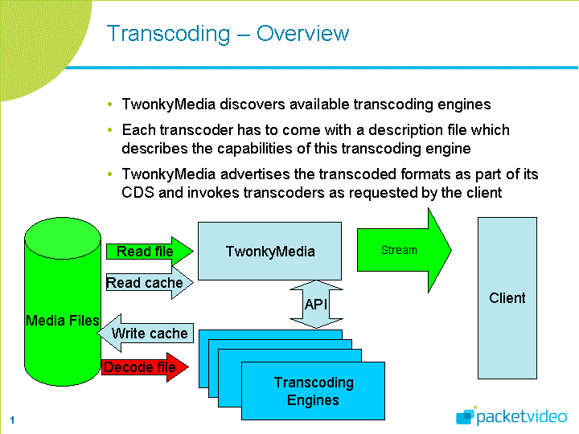

The new transcoding architecture is able to use nearly any external program for transcoding, rescaling or resampling.
Examples of such external programs are:
vlc,
ffmpeg,
mplayer,
mencoder,
imagemagick
and others.
In principal each program which is able to transform file x to file y can be used.

Subfolder cgi-bin contains several .desc files.
Each .desc file in cgi-bin describes exactly one transcoding path.
It has three mandatory and some optional entries, e.g. vlc-mov-mpeg2.desc:
exec: vlc $infile :sout=#transcode{vcodec=mp2v,acodec=mp2a,scale=1,channels=2,deinterlace,audio-sync}:duplicate{dst=std{access=file,mux=ps,dst=$outfile}} vlc:quit
from=video/mp4
to=video/mpeg
asynchronous
The mandatory from= and to= lines describe the source and the target mime-type
while the mandatory exec: line describes the external program, e.g. vlc,
and its exact parameters.
The optional asynchonous means that the transcoder should run in background and the server thread will not block until it has finished,
which make sense for streaming, but not for rescaling of pictures.
Another optional but important parameter is dlnaprofile=, see below.
$infile and $outfile are replaced by the server with the input filename and the output filename.
There will be some more variables later, e.g. $width, $height, etc.
The pathname of the transcoder is described in a .location file.
It contains just one line and describes the directory where the transcoder is stored, which makes configuration for Windows and Linux easier.
The name of the location file must match with the name of the transcoder, e.g. vlc.location:
c:\program files\videolan\vlc
Here is another example: vlc-wma-mp3.desc
exec: vlc $infile --novideo :sout=#transcode{acodec=mp3}:duplicate{dst=std{access=file,mux=ffmpeg,dst=$outfile}} vlc:quit
from=audio/x-ms-wma
to=audio/mpeg
asynchronous
Each .desc file describes exactly one potential transcoding path
with an unique from and to mime-type
(and an optional dlnaprofile).
With vlc-mov-mpeg2.desc and vlc-wma-mp3.desc (and vlc.location) the server knows
video/mp4 to video/mpeg
audio/x-ms-wma to audio/mpeg
There is also a table resources/transcoding.db.
This table describes all potential target ("transcoded") formats for a given media.
Each line consists of 2 or 3 entries (file-extension, target-mime-type and optional DLNA-profile,
if this format matches a DLNA profile from the DLNA spec).
Here is an excerpt of our current transcoding.db
mp3 audio/mpeg MP3 lpcm audio/x-wav LPCM wav audio/x-wav mpg video/mpeg MPEG_PS_PAL mpg video/mpeg MPEG_PS_NTSC mp4 video/mp4 AVC_MP4_BL_CIF30_MPEG1_L3
The server tries to add as many res-elements as possible from transcoding.db to each media in the following way:
The mime-type of a given media is compared with from in all .desc files.
If there is a match and if the target-mime-type matches the to mime-type
(and if the DLNA-profile matches dlnaprofile),
then the target-mime-type is added to the res-elements (using a the given file extension for the transcoded file).
It should be mentionend that also some client adaptation takes places here.
The target mime-type must also match the features of a particular client (client.db).
If a client is not able to play a particular type, this res-element is not added.
If the server for instances find a media file hello.wma (mime-type is audio/x-ms-wma)
it will find a match in vlc-wma-mp3.desc and will add an addional res-element
for audio/mpeg.
A player will see the media hello now in two versions (res-elements), as:
audio/x-ms-wma
audio/mpeg
If the player selects audio/x-ms-wma it will get the original file hello.wma.
If the player selects audio/mpeg the server will start the transcoder producing hello.mp3
with this command
vlc hello.wma --novideo :sout=#transcode{acodec=mp3}:duplicate{dst=std{access=file,mux=ffmpeg,dst=hello.mp3}} vlc:quit